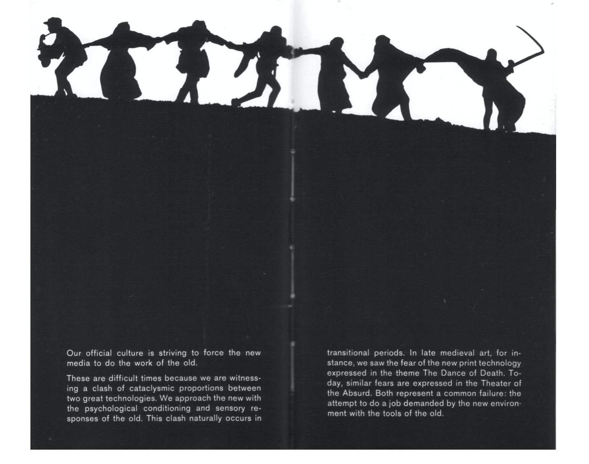
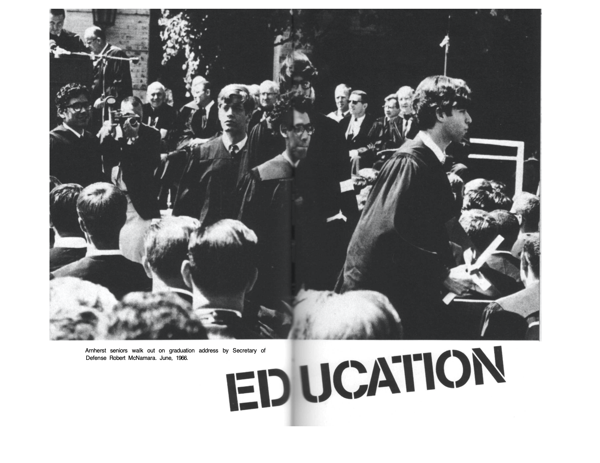

Electrical technology has unified the world and encouraged involvement. Everyone uses the media, and for various reasons that encompass all aspects of one’s life. In the media, one can connect family members, read about politics and the government, chat with friends, and do their jobs and education. There is one problem to this. So much information about everything can cause a serious question of privacy and the communities need to know. Do your followers really need to know that you went to Cancun? Did you have to find out about the big gossip that everyone is talking about when you do not even know the person? Since the media is so present in all of our daily lives, the media can take part in shaping our character. The more we see certain things the more we can start to believe they are true.
Since the media is so present in our lives, it can change us. Since we are faced with millions of different opinions daily, they can alter the way we think and change our points of view. McLuhan states that these types of social and cultural changes are impossible to understand without knowledge of how the media works around our environments. I understood this as a way of stating that in order to understand the fast pace changes in our society’s views, we have to be conscious that this can be due to the fast paced technology that we are surrounded with everyday. In some sense. As McLuhan states, “the medium is the message.”
When we use our phones to look at content, our phones are playing a role in not just delivering the information but the whole itself is in some way a type of content. Using our phones to look at information indicates the fast paced world we live in in which we can look at information in a matter of seconds. McLuhan states that sometimes the medium is more important than the content, because it is telling us something about the current society. For example, when the invention of the printed book came to be, the book allowed people to read privately which caused inspiration. The printed book added a sense of individualism to the people of that time. Therefore, not only were books informative and entertaining, the books themselves allowed for a social and cultural revolution.
McLuhan stresses that we need to stop using old techniques in order to use the new media. New jobs should be done with new tools, not with old tools. Even though old tools might be great, they are more useful when used for something that is older as well. For example, McLuhan stresses that education needs to change from less instruction to more discovery. This is due to the fact that newer media is providing so much new information that students need to be on top of things and learn how to provide something to their society. That does not mean that the old education system of instruction were not useful, but changing educational systems to adapt to the fast paced media world will be more beneficial to newer generations.
 